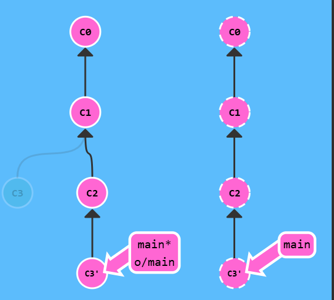

git 远程
远程仓库
远程仓库并不复杂, 在如今的云计算盛行的世界很容易把远程仓库想象成一个富有魔力的东西, 但实际上它们只是你的仓库在另个一台计算机上的拷贝。你可以通过因特网与这台计算机通信 —— 也就是增加或是获取提交记录
话虽如此, 远程仓库却有一系列强大的特性
- 首先也是最重要的的点, 远程仓库是一个强大的备份。本地仓库也有恢复文件到指定版本的能力, 但所有的信息都是保存在本地的。有了远程仓库以后，即使丢失了本地所有数据, 你仍可以通过远程仓库拿回你丢失的数据。
- 还有就是, 远程让代码社交化了! 既然你的项目被托管到别的地方了, 你的朋友可以更容易地为你的项目做贡献(或者拉取最新的变更)
如何将远程仓库拉取到本地托管
- 安装git，并配置好相应的邮箱，用户名等信息。
- 获取仓库的克隆地址（HTTPS或者SSH，如果使用SSH。确保配置了SSH密钥，可以参考github[文档](关于 SSH - GitHub 文档 — About SSH - GitHub Docs)）
- 选择你保存的目录，点开git（或者git，利用cd进入保存的目录），克隆对应的仓库地址
git clone https://github.com/username/repository.git
如何将本地仓库托管到远程
- 首先在github创建仓库，不建议勾选添加readme文件，保证仓库为空
- 进入需要本地仓库目录，打开git
- 初始化git仓库
git init
- 添加所有文件到暂存区
git add *
- 提交到本地git仓库
git commit -m "初始化项目"
- 将 GitHub 仓库的地址添加为远程仓库，复制 GitHub 仓库地址：
- HTTPS 示例：
https://github.com/username/repository.git
- HTTPS 示例：
- 添加远程仓库
git remote add origin 仓库地址
验证远程仓库是否添加成功：
git remote -v推送到github
git push
当我们完成上面的步骤，我们可以看一下发生了什么。
你可能注意到的第一个事就是在我们的本地仓库多了一个名为 o/main 的分支, 这种类型的分支就叫远程分支。由于远程分支的特性导致其拥有一些特殊属性。（其实是origin/main）
origin是本地仓库和远程仓库之间的一个标识符，默认指向你克隆或关联的远程仓库。虽然你可以给远程仓库起其他名字，但
origin是最常用的默认名称
远程分支反映了远程仓库(在你上次和它通信时)的状态,只有你每次推送或者拉取的时候o/main才会改变，因为这是和远程分支同步的，所以只会保留在上次通讯的时候。
这会有助于你理解本地的工作与公共工作的差别 —— 这是你与别人分享工作成果前至关重要的一步.
远程分支有一个特别的属性，当你切换到远程分支（如
git checkout origin/main）时，Git 不会将HEAD指向一个可写分支，而是指向某个特定的提交（远程分支的当前状态），自动进入分离 HEAD 状态,意味着你无法对o/main指向修改，只是指向它指向的点。Git 这么做是出于不能直接在这些分支上进行操作的原因, 你必须在别的地方完成你的工作, （更新了远程分支之后）再用远程分享你的工作成果。
因为远程分支本质上只是一个只读的指针，用来同步和反映远程仓库的状态。
远程分支的内容由远程仓库控制。如果允许在本地直接操作
origin/main，可能会造成本地状态和远程仓库之间的冲突。
切换到远程分支（虚线为远程仓库）
git check origin/main
git commit
正如你所见，Git 变成了分离 HEAD 状态，当添加新的提交时 o/main 也不会更新。这是因为 o/main 只有在远程仓库中相应的分支更新了以后才会更新。

Git Fetch
Git 远程仓库相当的操作G实际可以归纳为两点：向远程仓库传输数据以及从远程仓库获取数据。
从远程仓库获取数据
git fetch
C2,C3 被下载到了本地仓库，同时远程分支 o/main 也被更新，反映到了这一变化。注意本地main没有动。
git fetch 完成了仅有的但是很重要的两步:
- 从远程仓库下载本地仓库中缺失的提交记录
- 更新远程分支指针(如
o/main)
git fetch 实际上将本地仓库中的远程分支更新成了远程仓库相应分支最新的状态。
git fetch 不会做的事
git fetch 并不会改变你本地仓库的状态。它不会更新你的 main 分支，也不会修改你磁盘上的文件。
理解这一点很重要，因为许多开发人员误以为执行了 git fetch 以后，他们本地仓库就与远程仓库同步了。它可能已经将进行这一操作所需的所有数据都下载了下来，但是并没有修改你本地的文件。
git fetch 的理解为单纯的下载操作。
Git Pull
当远程分支中有新的提交时，你可以像合并本地分支那样来合并远程分支。也就是说就是你可以执行以下命令:
git cherry-pick o/maingit rebase o/maingit merge o/main
实际上，由于先抓取更新再合并到本地分支这个流程很常用，因此 Git 提供了一个专门的命令来完成这两个操作。它就是我们要讲的 git pull。
先看fetch和merge依次执行的操作
git fetch
git merge origin/main
就是拉取最新的变化，来与本地进行整合，不改变origin/main的指向。
注意：foo 追踪 o/foo，要想pull时候merge，是应该head必须在本地的foo上。(最后的origin应该会打破些常规)
如果你当前的 HEAD 不在 foo 上，而是在其他分支（比如 bar）上，git pull 会尝试将远程 foo 分支的更改合并到当前分支（例如 bar），这可能导致意外的合并问题，或者根本无法合并。
如果使用 git pull 呢，一样的效果。
就是在下载之后，merge到HEAD指向的节点。
Git Push
git push 负责将你的变更上传到指定的远程仓库，并在远程仓库上合并你的新提交记录。一旦 git push 完成, 你的朋友们就可以从这个远程仓库下载你分享的成果了！
注意 —— git push 不带任何参数时的行为与 Git 的一个名为 push.default 的配置有关。它的默认值取决于你正使用的 Git 的版本，但是在教程中我们使用的是 upstream。 这没什么太大的影响，但是在你的项目中进行推送之前，最好检查一下这个配置。（TO DO）
git push
远程仓库接收了 C2，远程仓库中的 main 分支也被更新到指向 C2 了，我们的远程分支 (o/main) 也同样被更新了。所有的分支都同步了！
偏离的工作
假设你周一克隆了一个仓库，然后开始研发某个新功能。到周五时，你新功能开发测试完毕，可以发布了。但是 —— 天啊！你的同事这周写了一堆代码，还改了许多你的功能中使用的 API，这些变动会导致你新开发的功能变得不可用。但是他们已经将那些提交推送到远程仓库了，因此你的工作就变成了基于项目旧版的代码，与远程仓库最新的代码不匹配了。
这种情况下, git push 就不知道该如何操作了。如果你执行 git push，Git 应该让远程仓库回到星期一那天的状态吗？还是直接在新代码的基础上添加你的代码，亦或由于你的提交已经过时而直接忽略你的提交？
因为这情况（历史偏离）有许多的不确定性，Git 是不会允许你 push 变更的。实际上它会强制你先合并远程最新的代码，然后才能分享你的工作。
你的工作是基于c1发展的，但是远程仓库已经发展到c2，你显然已经无法push了， Git 会拒绝你的推送请求。
很简单，你需要做的就是使你的工作基于最新的远程分支。
git fetch
git rebase origin/main
git push
我们用 git fetch 更新了本地仓库中的远程分支，然后用 rebase 将我们的工作移动到最新的提交记录下，最后再用 git push 推送到远程仓库。
当然可以使用merge融合，但是push后确实另一种。
git fetch
git merge origin/main
git push
融合过程中给的c3并没有被忽视，而是同时传递到了远程仓库中

前面已经介绍过 git pull 就是 fetch 和 merge 的简写，类似的 git pull --rebase 就是 fetch 和 rebase 的简写！
git pull --rebase
git push
跟rebase一样，命令更加简洁了
git pull
git push
这个就和merge一模一样了
远程服务器拒绝!(Remote Rejected)
如果你是在一个大的合作团队中工作, 很可能是main被锁定了, 需要一些Pull Request流程来合并修改。如果你直接提交(commit)到本地main, 然后试图推送(push)修改, 你将会收到这样类似的信息:
! [远程服务器拒绝] main -> main (TF402455: 不允许推送(push)这个分支; 你必须使用pull request来更新这个分支.)
远程服务器拒绝直接推送(push)提交到main, 因为策略配置要求 pull requests 来提交更新.
你应该按照流程,新建一个分支, 推送(push)这个分支并申请pull request,但是你忘记并直接提交给了main.现在你卡住并且无法推送你的更新.
git checkout -b feature
git push
我们可以看见创建的分支在远程仓库创建了分支，远程的main并没有改变
新建一个分支feature, 推送到远程服务器. 然后reset你的main分支和远程服务器保持一致, 否则下次你pull并且他人的提交和你冲突的时候就会有问题.
git branch -f main o/main
如果你的本地 main 分支与远程 main 分支不一致，下次拉取远程更改时可能会发生冲突。例如：
- 你在本地
main分支做了一些临时更改，但未提交。 - 远程
main分支有其他人提交的新内容。

为什么不用 merge 呢?
了 push 新变更到远程仓库，你要做的就是包含远程仓库中最新变更。意思就是只要你的本地分支包含了远程分支（如 o/main）中的最新变更就可以了，至于具体是用 rebase 还是 merge，并没有限制。
Rebase 使你的提交树变得很干净, 所有的提交都在一条线上(优点)
Rebase 修改了提交树的历史（缺点，比如, 提交 C1 可以被 rebase 到 C3 之后。这看起来 C1 中的工作是在 C3 之后进行的，但实际上是在 C3 之前。）
仁者见仁，智者见智
为了实现上面的，我们首先要拉取不同远程的c3,然后合并推送即可
远程跟踪分支
Git 好像知道 main 与 o/main 是相关的。当然这些分支的名字是相似的，可能会让你觉得是依此将远程分支 main 和本地的 main 分支进行了关联。这种关联在以下两种情况下可以清楚地得到展示：
pull 操作时, 提交记录会被先下载到 o/main 上，之后再合并到本地的 main 分支。隐含的合并目标由这个关联确定的。
push 操作时, 我们把工作从
main推到远程仓库中的main分支(同时会更新远程分支o/main) 。这个推送的目的地也是由这种关联确定的！
main 和 o/main 的关联关系就是由分支的“remote tracking”属性决定的。main 被设定为跟踪 o/main —— 这意味着为 main 分支指定了推送的目的地以及拉取后合并的目标，好吧, 当你克隆仓库的时候, Git 就自动帮你把这个属性设置好了。
可以让任意分支跟踪 o/main, 然后该分支会像 main 分支一样得到隐含的 push 目的地以及 merge 的目标。
有两种方法设置这个属性，第一种就是通过远程分支切换到一个新的分支，执行:
git checkout -b totallyNotMain o/main
就可以创建一个名为 totallyNotMain 的分支，它跟踪远程分支 o/main。
git checkout -b foo o/main
git pull
正如你所看到的, 我们使用了隐含的目标 o/main 来更新 foo 分支。需要注意的是 main 并未被更新！融合的是foo分支
git push 同样适用
git checkout -b foo o/main
git commit
git push
我们将一个并不叫 main 的分支上的工作推送到了远程仓库中的 main 分支上
第二种方法
另一种设置远程追踪分支的方法就是使用：git branch -u 命令，执行：
git branch -u o/main foo
这样 foo 就会跟踪 o/main 了。如果当前HEAD就在 foo 分支上, 还可以省略 foo：
git branch -u o/main
Git Push 的参数
首先来看 git push。在远程跟踪课程中，你已经学到了 Git 是通过当前所在分支的属性来确定远程仓库以及要 push 的目的地的。这是未指定参数时的行为，我们可以为 push 指定参数，语法是：
git push <remote> <place>
remote(远程仓库)：一般设置的都是origin（内部地址在配置的时候就弄好了）
git push origin main
意思是：切到本地仓库中的“main”分支，获取所有的提交，再到远程仓库“origin”中找到“main”分支，将远程仓库中没有的提交记录都添加上去，搞定之后告诉我。
通过“place”参数来告诉 Git 提交记录来自于 main, 要推送到远程仓库中的 main。它实际就是要同步的两个仓库的位置。
git checkout c0
git push origin main
即使HEAD分离，我们依然能供将对应的上传，远程仓库中的 main 分支得到了更新。
如果不指定参数，就是无法上传因为此时HEAD没有跟踪任何分支
<place>参数详解
如果来源和去向分支的名称不同呢？比如你想把本地的 foo 分支推送到远程仓库中的 bar 分支。
同时为源和目的地指定 <place> 的话，只需要用冒号 : 将二者连起来就可以了：
git push origin <source>:<destination>
source 可以是任何 Git 能识别的位置：意思是 Git 能识别的位置（比如分支 foo 或者 HEAD~1）
destination显然不是随意的。
例如
git push origin foo^:main
这是个令人困惑的命令，但是它确实是可以运行的 —— Git 将 foo^ 解析为一个位置，上传所有未被包含到远程仓库里 main 分支中的提交记录。
如果你要推送到的目的分支不存在会怎么样呢？没问题！Git 会在远程仓库中根据你提供的名称帮你创建这个分支！
git push origin main:newBranch
Git fetch 的参数
git fetch 的参数和 git push 极其相似。他们的概念是相同的，只是方向相反罢了（因为现在你是下载，而非上传）
git fetch origin foo
Git 会到远程仓库的 foo 分支上，然后获取所有本地不存在的提交，放到本地的 o/foo 上。
我们只下载了远程仓库中 foo 分支中的最新提交记录，并更新了 o/foo
你可能会好奇 —— 为何 Git 会将新提交放到 o/foo 而不是放到我本地的 foo 分支呢？之前不是说这样的 参数就是同时应用于本地和远程的位置吗？
好吧, 本例中 Git 做了一些特殊处理，因为你可能在 foo 分支上的工作还未完成，你也不想弄乱它。还记得在 git fetch 课程里我们讲到的吗 —— 它不会更新你的本地的非远程分支, 只是下载提交记录（这样, 你就可以对远程分支进行检查或者合并了）。
这里有一点是需要注意的 —— source 现在指的是远程仓库中的位置，而 <destination> 才是要放置提交的本地仓库的位置。它与 git push 刚好相反，这是可以讲的通的，因为我们在往相反的方向传送数据。
git fetch origin C2:bar
Git 将 C2 解析成一个 origin 仓库的位置，然后将那些提交记录下载到了本地的 bar 分支（一个本地分支）上。
如果执行命令前目标分支不存在会怎样呢？
跟 git push 一样，Git 会在 fetch 前自己创建立本地分支, 就像是 Git 在 push 时，如果远程仓库中不存在目标分支，会自己在建立一样。
没有参数呢?
如果 git fetch 没有参数，它会下载所有的提交记录到各个远程分支……
古怪的 <source>
Git 有两种关于 <source> 的用法是比较诡异的，即你可以在 git push 或 git fetch 时不指定任何 source，方法就是仅保留冒号和 destination 部分，source 部分留空。
git push origin :sidegit fetch origin :bugFix
如果 push 空 到远程仓库会如何呢？它会删除远程仓库中的分支！
`git push origin :foo

如果 fetch 空 到本地，会在本地创建一个新分支
`git fetch origin :bar
Git pull 参数
以下命令在 Git 中是等效的:
git pull origin foo 相当于：
git fetch origin foo; git merge o/foo
还有…
git pull origin bar:bugFix 相当于：
git fetch origin bar:bugFix; git merge bugFix
git pull origin main
通过指定 main 我们更新了 o/main。然后将 o/main merge 到我们的所在的分支，无论我们当前所在的位置是哪。
git pull origin main:foo
它先在本地创建了一个叫 foo 的分支，从远程仓库中的 main 分支中下载提交记录，并合并到 foo，然后再 merge 到我们的当前所在的分支 bar 上。